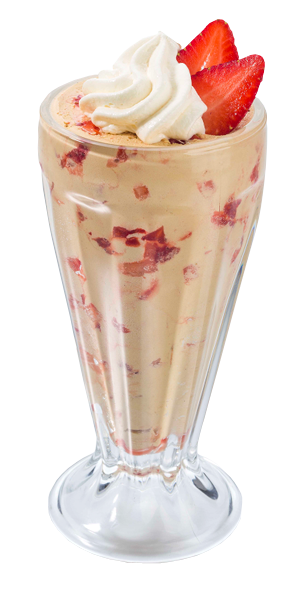

Mousse de fruta de la pasión

Ingredientes
- 10 frutas de la pasión.
- 2 cucharaditas de gelatina.
- 1/4 taza de jugo de naranja recién exprimido.
- 1 1/2 taza de crema espesa.
Preparación:
- Extraer la pulpa de las frutas de la pasión con una cuchara y ponerla en un bol mediano.
- Disolver la gelatina en el jugo de naranja a baño María.
- Añadirla a la pulpa y mezclar bien.
- Batir la crema a tres cuartos de punto y añadirla en forma suave y envolvente a la mezcla de fruta.
- Distribuir la mousse en 4 copas y refrigerar hasta el momento de servir.
- Decorar con semillas de fruta de la pasión.
Y listas para disfrutar
Notas del chef
- Tiempo de cocción: 2 minutos.
- Tiempo de preparación: 15 minutos.
- Cantidad: 4 porciones.
- Es un postre superrápido y fácil que saca de apuros a los cocineros atareados.